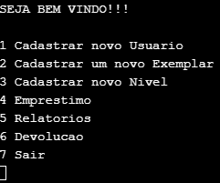
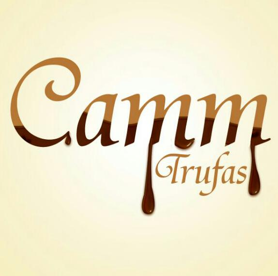

Quando estava no ensino médio, tive a oportunidade de entrar em um programa chamado Entra21, onde o foco era formar pessoas novas para o mercado de desenvolvimento de sistemas, nesse programa aprendi muito sobre o comportamento que devo ter em uma empresa e em todas as etapas desenvolvi muito bem as atividades que foram propostas, minha formação no Entra21 foi em Genexus X. Porém em 2010 poucas empresas na região utilizavam esse sistema e somando com a minha idade, falta de experiência e o problema de se locomover de Gaspar para Blumenau, não tive oportunidade de me inserir na área de desenvolvimento de Software.
Na época muito jovem, precisando ganhar dinheiro, optei trabalhar em um supermercado da região, nessa empresa comecei como auxiliar de logística, posteriormente indo para conferente, sendo promovido para auxiliar de RH e logo em seguida auxiliar Financeiro,
após 4 anos no supermercado, tive oportunidade de trabalhar em uma contabilidade como Analista Fiscal, mais mesmo ganhando um salário razoavelmente bom, o meu sonho de programador não acabou. Onde em algum momento na minha vida, decido voltar para a área de desenvolvimento de sistemas e o primeiro passo dessa minha decisão, foi a minha entrada no Instituto Federal de Santa Catarina e durante um ano e meio de graduação, me preparei financeiramente para efetuar o estágio na Benner Sistemas e é onde estou hoje, realizando o estágio me dedicando bastante aos cursos oferecidos pela Benner e assim me preparando para desenvolver o projeto final do estágio, que será um Gerenciador de Controle Ponto.
No decorrer da graduação em Análise e Desenvolvimento de Sistemas, desenvolvi trabalhos individuais e em conjuntos em linguagem de programação C, a seguir dois destes projetos desenvolvidos.
◆ Jogo da Vida
Jogo da vida é um autómato celular desenvolvido pelo matemático britânico John Horton Conway em 1970. É o exemplo mais bem conhecido de autômato celular. O jogo foi criado de modo a reproduzir, através de regras simples, as alterações e mudanças em grupos de seres vivos, tendo aplicações em diversas áreas da ciência. As regras definidas são aplicadas a cada nova "geração"; assim, a partir de uma imagem em um tabuleiro bi-dimensional definida pelo jogador, percebem-se mudanças muitas vezes inesperadas e belas a cada nova geração, variando de padrões fixos a caóticos.
◆ Sistema de Biblioteca para Escritório de Advocacia

Você é um estudante do Curso Superior de Tecnologia em Análise e Desenvolvimento de Sistemas
e suponha que seu pai é um advogado e proprietário de um escritório de advocacia onde trabalham
cerca de 25 outros advogados das diversas áreas do direito (civil, criminal, família, trabalhista, etc).
Neste estabelecimento de trabalho, seu pai possui uma vasta coleção de livros, porém ele está com
dificuldades de localizá-los, bem como de controlar os empréstimos e as devoluções dessas obras
aos colaboradores do escritório.
Diante dessa necessidade, você foi incumbido de desenvolver um sistema de informação para
resolver este problema
Durante a minha graduação em Processo Gerências, um dos trabalhos acadêmicos realizdos foi o plano de negócios de uma empresa criada por mim e meu grupo.
◆ CAMM Trufas

A empresa Camm Trufas se destina a fornecer trufas em caixas personalizadas para o seu
evento, tais como shows, casamentos, aniversários, etc. Onde podem ser servidas como degustação
ou de lembrança do evento, já que as trufas possuem um mix, com caixas que serão personalizadas
com a logo da empresa ou com o nome da aniversariante.